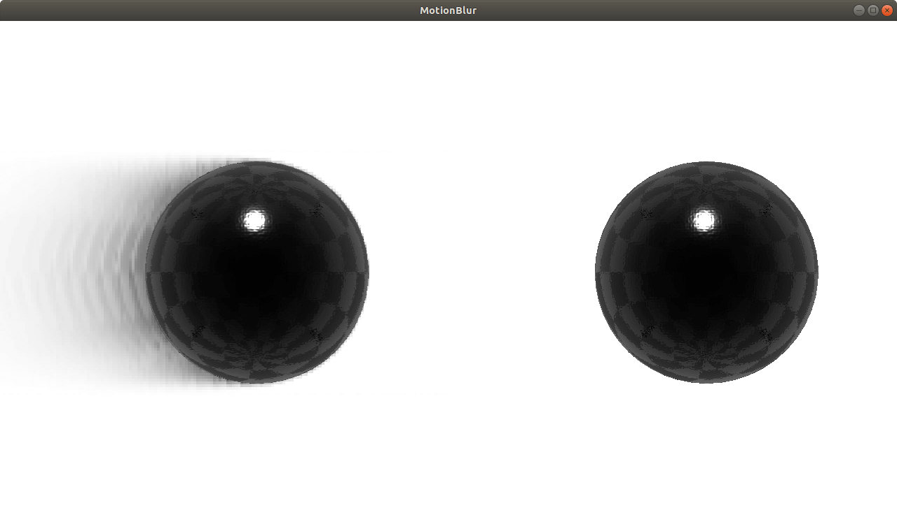

MotionBlur QML Type
A motion blur effect. More...
| Import Statement: | import QtQuick3D.Effects 1.15 |
Properties
- blurQuality : real
- fadeAmount : real
Detailed Description

The MotionBlur effect creates an apparent streaking for rapidly moving objects in the scene.
Note: The background mode must be SceneEnvironment.Transparent for MotionBlur to work.
Property Documentation
blurQuality : real |
The quality of the blur. Increasing quality will have impact on performance. Range is [0...1]. 0.25 by default.
fadeAmount : real |
Fade speed of the trail. Range is [0...1], with 0 meaning the object trail persists indefinitely and 1 meaning the object trail fades out immediately. 0.25 by default.